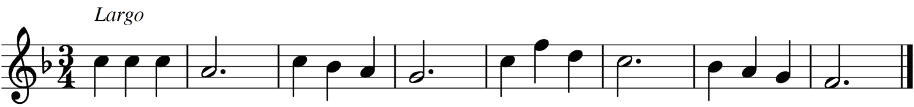
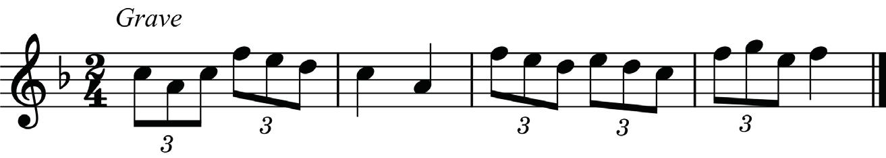
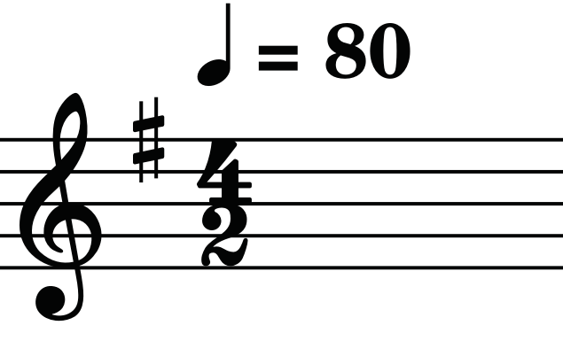
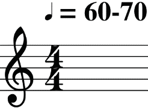

(f) Grave: This is a term used for a very slow and solemn tempo (20-40 BPM).
Grave can be placed either above the first measure to indicate the tempo or above a new section to indicate changes in a tempo. Figure 4.6 shows an example on of how grave is applied to a melody.

Tempo marks
The tempo of music can be indicated using different tempo marks. When a tempo mark is used, it indicates that a specific speed has to be observed when performing the music. The following are examples of some tempo marks used in music. Figure 4.7 shows a tempo mark indicating 80 crotchet beats per minute, which means that the speed of the music should be 80 BPM.

Figure 4.8 shows a tempo mark indicating 60 to 70 crotchet beats per minute. This means that the speed of the music should be between 60 and 70 BPM, based on how the performer or conductor would prefer.
